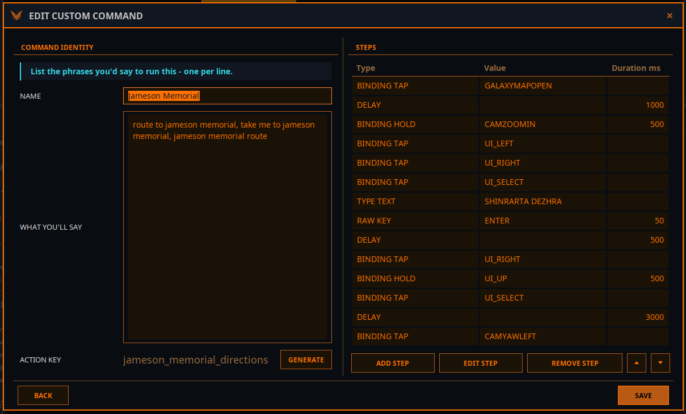

Crear tus propios comandos
Un comando personalizado es una macro: una lista de pasos — pulsaciones, pausas, texto escrito, frases habladas — que se ejecuta cuando dices una de tus frases. Úsalo cuando los comandos integrados no hacen lo que quieres, o cuando repites una y otra vez la misma secuencia de teclas.
Los comandos personalizados están en Acciones → Comandos personalizados. Esta página construye dos desde cero.
Antes de empezar
- Debe haber un modelo de lenguaje en marcha. Genera la clave de acción y empareja tus frases. Arranca antes los servicios en la pestaña Vega.
- Cada control que uses necesita un binding de teclado. Elite Intel pulsa teclas; un control asignado solo a tu HOTAS no lo puede pulsar una macro. La pestaña Bindings muestra lo que falta, y Autoasignar bindings faltantes lo arregla de una vez.
Ejemplo 1: contramedidas de un tirón
Objetivo: decir «lanza contramedidas» y obtener disipador térmico, chaff y célula de escudo, con confirmación de Vega.
1. Crear el comando
Abre Acciones → Comandos personalizados y pulsa Nuevo.
2. Nombre y frases
Nombre:
ContramedidasLo que dirás: una frase por línea (también valen comas):
lanza contramedidas todas las contramedidas paquete defensivo
Escribe las frases como las dirías de verdad bajo presión. Deben ser distintas de los comandos integrados — una frase que ya pertenece a un comando integrado («disipador térmico», «chaff») se rechaza, porque Vega nunca podría distinguirlas.
3. Generar la clave de acción
Pulsa Generar. El modelo de lenguaje convierte tus frases en una clave snake_case en inglés,
como deploy_all_countermeasures. No se puede escribir a mano — se convierte en el nombre que ve el
modelo, así que debe tener una forma que el modelo siempre pueda repetir. Está en inglés aunque tus
frases no lo estén.
4. Añadir los pasos
Pulsa Agregar paso para cada uno. En el diálogo elige el Tipo y rellena lo que pide. La
lista Binding está etiquetada como la pantalla de Controles del juego — Controles de nave /
Cooling / Deploy Heatsink — y puedes escribir en ella para filtrar (prueba heat, srv,
chaff). Los nombres de los controles aparecen en inglés.
| # | Tipo | Valor | Duración ms |
|---|---|---|---|
| 1 | Pulsación de binding | Deploy Heatsink | |
| 2 | Retraso | 150 | |
| 3 | Pulsación de binding | Use Chaff Launcher | |
| 4 | Retraso | 150 | |
| 5 | Pulsación de binding | Use Shield Cell | |
| 6 | Hablar | Contramedidas fuera. |
Usa Editar paso, Quitar paso y los botones ▲ ▼ para ajustar el orden.
5. Guardar y probar
Pulsa Guardar. Si algo está mal, un mensaje de validación te dice qué — mira Solución de problemas al final de esta página. El comando aparece ahora en la lista.
Haz clic en su fila y luego en Ejecutar para probarlo sin hablar. Cuando funcione, dilo:
«Lanza contramedidas.» También puedes escribirlo en el chat del juego: @Vega lanza contramedidas.
Ejemplo 2: una ruta a un lugar que visitas a menudo
Vega no traza una ruta a un sistema que nombras en voz alta — los nombres son donde más falla el reconocimiento de voz. Para un lugar al que vuelas a menudo, una macro maneja el mapa galáctico por ti, siempre igual.

Lo que dirás: ruta a jameson memorial, llévame a jameson memorial, jameson memorial ruta. Luego Generar.
| # | Tipo | Valor | Duración ms | Qué hace |
|---|---|---|---|---|
| 1 | Pulsación de binding | GALAXYMAPOPEN | Abrir el mapa galáctico | |
| 2 | Retraso | 1000 | Dejar que cargue el mapa | |
| 3 | Mantener binding | CAMZOOMIN | 500 | Hacer zoom con la cámara del mapa |
| 4 | Pulsación de binding | UI_LEFT | Ir al campo de búsqueda | |
| 5 | Pulsación de binding | UI_RIGHT | ||
| 6 | Pulsación de binding | UI_SELECT | Abrir el campo de búsqueda | |
| 7 | Escribir texto | SHINRARTA DEZHRA | Escribir el nombre del sistema | |
| 8 | Tecla directa | ENTER | 50 | Buscar |
| 9 | Retraso | 500 | Esperar el resultado | |
| 10 | Pulsación de binding | UI_RIGHT | Entrar en el panel de resultados | |
| 11 | Mantener binding | UI_UP | 500 | Subir hasta el botón superior |
| 12 | Pulsación de binding | UI_SELECT | Trazar la ruta | |
| 13 | Retraso | 3000 | Esperar a que se trace la ruta | |
| 14 | Pulsación de binding | CAMYAWLEFT |
Para otro lugar, selecciona este comando, pulsa Duplicar, cambia el nombre, las frases y el sistema del paso 7, y Genera una clave nueva. Duplicar deja a propósito vacías las frases y la clave, para que los dos comandos nunca suenen igual.
Lanza una macro así en vuelo, con el mapa galáctico cerrado — el primer paso lo abre, y con el mapa ya abierto lo cerraría.
Los tipos de paso
| Tipo | Campos | Para qué |
|---|---|---|
| Pulsación de binding | Binding | Pulsar un control del juego una vez |
| Mantener binding | Binding, Duración ms | Mantener un control — acelerador, cámara, desplazarse por un menú |
| Retraso | Duración ms | Dar tiempo al juego: un panel que se abre, un mapa que carga, una búsqueda |
| Hablar | Texto | Que Vega diga algo — una confirmación, o lo que acaba de hacer la macro |
| Tecla directa | Tecla directa, Modificador, Duración ms | Pulsar una tecla que no es un binding del juego: Enter, Escape, una letra. La duración es cuánto se mantiene |
| Escribir texto | Texto | Escribir caracteres en el campo con el foco — una caja de búsqueda, la línea del chat |
Mejor pasos de binding que Tecla directa. Un binding sigue la tecla que el juego usa de verdad, así que la macro sigue funcionando si reasignas el control. Usa Tecla directa solo para teclas sin binding, como Enter dentro de un campo de texto.
Escribir texto va adonde esté el foco del teclado. Abre antes el campo — con un paso de binding que abra una caja de búsqueda, o con Tecla directa: Enter para el chat de comunicaciones. Si no, las letras llegan a los controles de la nave como pulsaciones.
Consejos
- Los retrasos suelen ser la solución. Si un paso parece saltarse, el juego no estaba listo. Alarga el retraso anterior o mueve Ritmo de entrada de teclas en la pestaña Bindings hacia Lento — añade una pausa tras cada pulsación enviada.
- Varias frases, significado claro. No hace falta decir la frase al pie de la letra; Vega empareja por significado. Cuanto más se distingan tus frases de otros comandos, con más fiabilidad se elegirá el tuyo.
- Los pasos Hablar hacen que las macros parezcan parte de la nave, y confirman que la macro se ejecutó.
- Compártelos. Exportar escribe los comandos elegidos en un archivo; Importar lee uno. Importar sustituye tu conjunto actual, pero antes se hace una copia — Restaurar desde copia de seguridad lo recupera.
- Fíjate en el mensaje de arranque. Al iniciar los servicios, Vega dice cuántos comandos personalizados cargó y cuántos no pasaron la validación.
Solución de problemas
Los mensajes de validación al guardar aparecen en inglés.
| Mensaje o síntoma | Qué hacer |
|---|---|
| Añade al menos una frase arriba antes de generar una clave. | Escribe primero al menos una frase |
| No se pudo generar una clave de acción. | El modelo de lenguaje no respondió. Mira el indicador LLM de la pestaña Vega y vuelve a intentarlo |
| Phrase collides with a built-in action alias | Esa frase ya ejecuta un comando integrado. Cámbiala |
| Phrase collides with another custom command / Duplicate phrase | Dos comandos — o el mismo dos veces — usan esa frase. Cambia una |
| Action key collides with a built-in command / must be unique | Reformula las frases y Genera de nuevo |
| At least one step is required / … is required / durationMs must be positive | A un paso le falta binding, texto, tecla o duración |
| La macro se ejecuta pero algo se salta | Añade o alarga un Retraso antes de ese paso, o ralentiza el ritmo de entrada |
| Vega responde con otra cosa | Haz tus frases más distintivas, o ejecútalo escrito: @Vega <frase> |
| Un paso de binding no hace nada | Ese control no tiene binding de teclado — ver la pestaña Bindings |
Community 👉Matrix👈